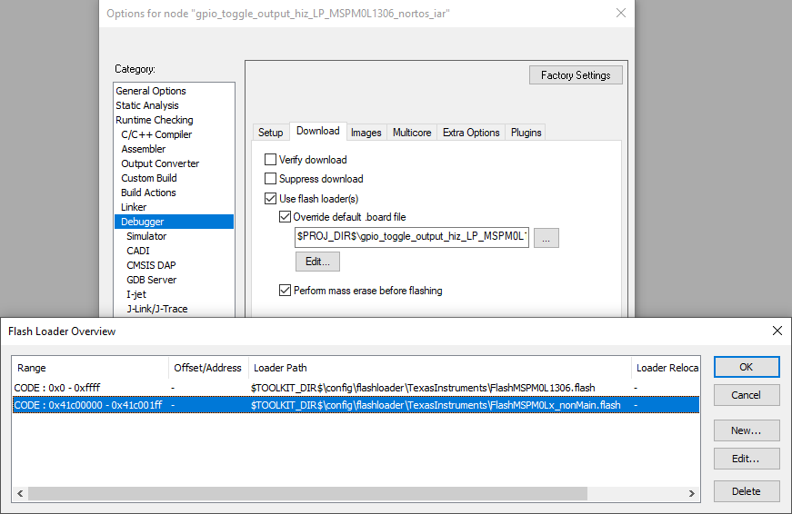

适用于 MSPM0 MCU 的 IAR Embedded Workbench IDE 9.50.2+ 版¶
目录¶
请先阅读¶
如何使用本指南¶
本指南仅说明软件开发环境的设置和基本操作， 但并未全面介绍 MSPM0 微控制器或完整的开发软件与硬件系统。 如需了解相关详细信息，请参阅 德州仪器 （TI）相关文档部分中列出的相应 TI 和 IAR 文档。
本指南适用于 TI XDS-110、IAR I-Jet 和 Segger J-Link 开发工具系列的使用。
这些工具包含封装时可用的最新材料。有关最新材料 （包括数据表、用户指南、软件和应用信息），请访问 TI MSPM0 网站或联系当地的 TI 销售办事处。
与注意事项有关的信息¶
本指南可能包含注意事项。
注意 - 这是注意事项语句的示例。 注意事项语句描述了一种可能对软件或者器件造成潜在损坏的情况。
请仔细阅读每条注意事项。
德州仪器 （TI）提供的相关文档¶
MSPM0 开发工具文档：
MSPM0 器件文档：
如果您需要协助¶
请针对访问MSPM0 MCU 的 E2E 社区支持论坛，与同行工程师、 TI 工程师和其他专家进行公开交流。更多器件特定信息可在 MSPM0 网站上找到。
1. 软件安装¶
IAR 网站或 TI IAR 入门页面提供 IAR Embedded Workbench for Arm (EWARM) IDE。MSPM0 微控制器和 MSPM0 SDK 需要 EWARM 9.50.2 或更高版本。
要查找适合您 IDE 版本的 SDK，请参阅 MSPM0 SDK 文档。
2. 开发流程¶
本章说明了如何使用 IAR EWARM 运行演示程序、开发应用软件以及如何使用 C-SPY 调试软件。
2.1 概述¶
在 Workbench 中使用汇编语言或者 C 语言开发应用程序，并使用 C-SPY 对其进行调试。C-SPY 无缝 集成到 Workbench 中。不过，区分代码开发环境 （Workbench）和调试器 （C-SPY）更加方便。C-SPY 可配置为使用连接至 MSPM0 器件的编程器工具（如 XDS-110），或使用器件的软件仿真器操作。IAR EWARM 是 Workbench 和 C-SPY 的统称。
关于 IAR EWARM 的文档很多，但关于 IAR EWARM 组件（IDE、调试器、汇编器、编译器、链接器）的完整文档位于 <Installation Root>\Embedded Workbench x.x\common\doc 和 <Installation Root>\Embedded Workbench\arm\doc。
整个EWARM 目录树中的 PDF 文件包含最新信息。此外，EWARM 文档在线提供，可通过 IDE 中的“Help”选项卡查看。
工具 |
用户指南 |
|---|---|
IDE |
EWARM_IDEGuide.ENU.pdf |
汇编器 |
EWARM_AssemblerReference.ENU.pdf |
编译器 |
EWARM_DevelopmentGuide.ENU.pdf |
C 库 |
EWARM_DevelopmentGuide.ENU.pdf |
链接器和库管理程序 |
EWARM_DevelopmentGuide.ENU.pdf |
调试 |
EWARM_DebuggingGuide.ENU.pdf |
2.2 从 MSPM0 SDK 创建 MSPM0 工程¶
请参阅适用于 IAR 的 MSPM0 SDK 快速入门指南，其中包含有关如何安装 MSPM0 SDK 以及在 IAR 中导入和编译 SDK 示例的说明。
2.3 从头开始创建工程¶
注意：不建议从头开始创建工程，因为从头开始创建工程不会 默认添加所有必要的器件支持文件。要从空白工程开始，TI 建议从 SDK 导入空 Driverlib 示例 工程。
2.4 将 SysConfig 与 IAR 配合使用¶
MSPM0 SDK 中的一些示例支持 SysConfig。SysConfig 是一个直观而全面的图形实用程序集合，用于配置引脚、外设、无线电、子系统和其他 组件。SysConfig 可助您直观地管理、发现和解决冲突，以便您有更多时间 创建差异化应用。
SysConfig 工具作为独立安装程序交付，可手动集成到 IAR 中，也可通过 dev.ti.com 云工具门户使用。
在 IAR 中启动 SysConfig 工程的最佳方式是从 SDK 将其导入；不过在首次启动时， 需执行一些步骤以在 IAR 中初始化 SysConfig。请参阅适用于 IAR 的 MSPM0 SDK 快速入门指南，以详细了解如何安装 SysConfig 和 为 IAR 启用 SysConfig。
有关如何将 SysConfig 与 MSPM0 配合使用的详细信息，请访问将 SysConfig 与 MSPM0 配合使用指南。
2.5 在 MSPM0 衍生产品之间进行迁移¶
通过 SysConfig，可以更轻松地在 MSPM0 衍生产品之间进行迁移；不过需进行一些手动修改。
在 SysConfig 中，启用器件视图并点击 SWITCH

选择新 MSPM0 器件的相应选项，然后点击 CONFIRM。
请注意，SysConfig 将突出显示与迁移的任何冲突，例如不可用的引脚和外设。 根据需要修复任何冲突。
在工程选项中，依次选择 General Options → Target → Device。选择 MSPM0 器件。
在工程选项中，依次选择 C/C++ Compiler → Preprocessor → Defined symbols。 根据所选器件添加器件定义。

更新链接器和启动文件。MSPM0 SDK 分别在
<sdk>\source\ti\devices\msp\m0p\linker_files\iar和<sdk>\source\ti\devices\msp\m0p\startup_system_files\iar中包含所有 MSPM0 衍生产品的默认文件。解析任何其他依赖项，例如不兼容的库和源代码。
注意：未使用 SysConfig 时，步骤 1-3 不适用。
2.6 栈和堆管理及 .icf 文件¶
可通过直接修改 .icf 链接器配置文件来配置保留的栈和堆大小。这些被输出到链接器的文件包含控制器件内存（RAM，闪存）分配的语句。有关这些文件的完整说明，请参阅 IAR 开发指南文档。
可对提供的 .icf 文件进行修改，以根据应用需求调整栈和堆大小；编辑 __ICFEDIT_size_cstack__=xx 或 __ICFEDIT_size_heap__=xx 可为栈或堆分配 xx 个字节。
2.7 如何生成 TI .TXT（及其他格式）文件¶
可将链接器配置为以 TI .TXT 格式输出对象，以便与 MSP-GANG 和 UniFlash 等编程工具一起使用。
依次点击 Project → Options → Output Converter → Generate additional output → Output format → Texas Instruments TI-TXT。也可以选择 Intel Hex 或其他格式。
2.8 为 MSPM0 擦除和编程 NONMAIN¶
注意：在擦除和编程 NONMAIN 时应特别小心。如果操作错误，器件将 锁定在永久不可恢复的状态。
依次点击 Options → Debugger → Download → Override default .board file → Edit。
选择第二个元素，然后点击“Okay”：
 添加
--non_main_erase作为额外参数：
2.9 覆盖预编译库¶
工程可能包括预编译库，可简化开发和编译过程；不过， 开发人员无法轻松修改源代码。
下面显示了此类库的一个示例 MSPM0 DriverLib。

覆盖库的一个选项是直接向工程添加任何或所有源文件。 MSPM0 SDK 包括 empty_driverlib_src 示例，其中默认包括所有 DriverLib 源：

请参阅调试预编译库，了解 如何调试预编译库。
3. 调试应用程序¶
3.1 使用 TI XDS 工具¶
TI 提供各种适用于 Arm 器件的调试探针，包括与 MSPM0 LaunchPad 集成的 XDS-110。
注意：TI XDS-110 调试探针通过 CMSIS-DAP 协议启用。不过， TI XDS 原生驱动程序目前性能更高。
要将这些调试探针用于 EWARM，需要安装 XDS 仿真包。仿真包副本 位于 \arm\drivers\ti-xds 下的 EWARM 安装程序中。请参阅同样位于此文件夹中的 Readme.txt 文档。TI 建议在 c:\ti\xds\ewarm_version 中安装仿真包。请勿使用其他 EWARM 版本的 XDS 仿真包， 因为它们可能不兼容，可能在调试时导致出错。
要使用 TI-XDS 调试探针，请依次选择 Options → Debugger → Driver → TI XDS：
安装仿真包后，可在 Options → Debugger → TI XDS 中选择 XDS 调试探针：
注意所选仿真器。LaunchPad 包括一个集成的 TI XDS110 仿真器。
所选接口是 MSPM0 支持的 SWD。
注意 TI EmuPack 安装路径。根据需要覆盖。
XDS 工具使用闪存加载程序将代码下载到器件。在 Options → Debugger → Use flash loader(s) 中确认使用：
3.2 使用 Segger J-Link 调试探针¶
要使用 Segger J-Link 调试探针，请依次选择 Options → Debugger → Driver → J-Link/J-Trace：
J-Link 工具使用闪存加载程序将代码下载到器件。在 Options → Debugger → Use flash loader(s) 中确认使用：
3.3 使用 IAR I-jet 调试探针¶
要使用 IAR I-Jet 调试探针，请依次选择 Options → Debugger → Driver → I-jet：

I-jet 工具使用闪存加载程序将代码下载到器件。在 Options → Debugger → Use flash loader(s) 中确认使用：
3.4 断点类型¶
C-SPY 断点机制使用有限数量的片上调试资源（具体为 4 个硬件断点 和 2 个硬件观察点）。MSPM0 不支持软件断点。这意味着在 C-SPY 中最多可设置 4 个断点。
重置程序和“运行至光标”操作临时需要1个断点。因此，只有 3 个断点 可处于活动状态。如果使用 4 个断点，C-SPY 将自动禁用1个断点。
如果设置了断点最大数量，将显示以下警告。

3.5 调试预编译库¶
工程可能包括预编译库，如果符号不可用，可能很难调试这些库。 此类库的一个示例是 MSPM0 DriverLib，它由多个 MSPM0 SDK 示例使用。
在此类情况下，IAR 将显示以下消息：

可通过选择包含源代码的文件夹来修复错误。在所示示例中，选择了 DriverLib 源代码：
或者，将源代码路径添加至 Options → Runtime Checking → C/C++ Compiler→Preprocessor。在所示示例中，添加了 DriverLib 源代码路径：

请参阅覆盖预编译库，以了解 如何覆盖和修改库的源代码。
4. 已知问题和常见问题解答 （FAQ）¶
在9.60.1之前的IAR版本中，本机不支持处理低功耗模式调试。
要在旧版本的IAR中启用低功耗模式调试支持，请执行以下步骤：
联系IAR获取最新版本的armXds.dll。
关闭IAR IDE。
将armXds.dll复制并粘贴到：
C:/Program Files/IAR Systems/EWARM/arm/bin
从MSPM0 SDK
C:\ti\<sdk>\tools\iar\low_power_mode_patch复制.dmac并粘贴到：C:/Program Files/IAR Systems/EWARM/arm/config/debugger/TexasInstruments
`` 通过使用这些文件修补IAR安装，当设备进入低功耗状态时，应保持与调试器的连接。
请参阅 SDK 中的已知问题和 FAQ。